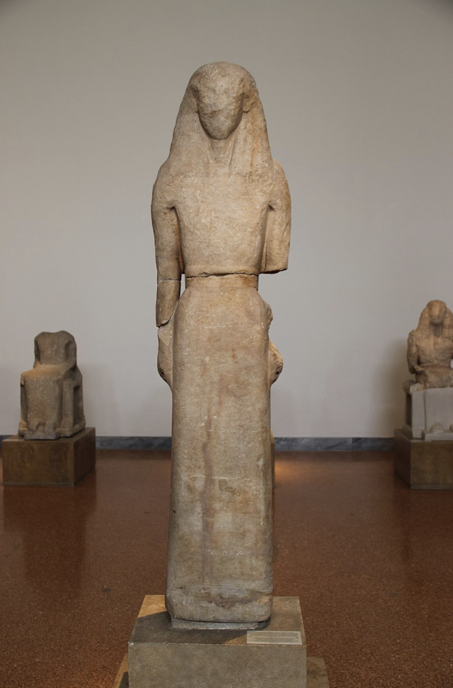

Influence from the East led to more naturalistic depictions of the figure as well as the introduction of motifs like Palmette leaves, Griffins, & Sphinx’s. Artists leveraged these foreign techniques to tell their own mythological stories. The Kore and the Kouros, Male and female free standing statues mimicking Egyption pose and proportions, were made to mark graves or were dedicated to Gods.


710 – 600 B.C.
10 year old boy found inside it, Protto - attic style. Odysseus vs Cyclops, Perseus vs Medusa & Gorgon sisters, Gets the cyclops drunk and stabs Giant in the eye. King gives Percy a task, Athena and Hermes take pity on him, he looks into the reflection of shield and cuts off her head. 3 gorgons are medusa’s sisters. Myths of sight.

530 B.C.
Created by the famous artist, Exekias. Ajax and Achilles playing a game on the Battle field of Troye. Ajax (right) is tense, which we can see by his eyebrow that is double lined, his spear held tight, and his slightly raised heal.

540 – 530 B.C.
This Kylix was dused for drinking as wine and water mixture out of. As you drink the wine the image is revealed. There are dolphins and grape vines covering the boat and hiding it from pirates, Donysus (the God of Wine) is reclined leisurely. Clearly the vibes are great!

540 BC -530 B.C.
Penthesilea Queen of the Amazons. Amazon came from the cutting off a breast to be able to shoot a bow better. Daughter of Ares. Fought with the Trojans against the Greeks. Achilles falls in love with her as he stabs her. Body in movement, body weight, proportions, naturalism. Torsion - Struggles with having the torso front facing and the legs in profile. Foreshortening: depicting a long object head on so that it looks compressed- Euphoronios was famous for this. Articulation of joints, veins, folds in clothing
7th Century B.C.
The dinos was used as a bowl to serve wine and water mixtures in the symposiums (social gatherings for men). The eastern influence can be seen by the Sphinx motifs.

590 – 580 B.C.
This is a marble free standing sculpture in the round. The Kore (female) and Kouros (man) were an image of excellence for men and women to aspire to. The statues were typically commissioned by aristocrats to be used as grave markers. They were offerings to gods in sanctuaries (votive statues). It has extreme frontality - Hieratism- a pose influenced by egyptian art. There are parralel lines throughout the body, from the bilateral symmitry of the body, to the browline echoing the perfect curve of the eyes. This perfection was used intentionally opposed to anatomic accuracy.
650-625 B.C.
A females figure, whose inscription says the statue is dedicated to Artemis. Nikandre is the name of the person who gave it to the sanctuary. The statue is meant to be seen from the front, as she stands in Hieratism- frontaly posed with a fixed gaze